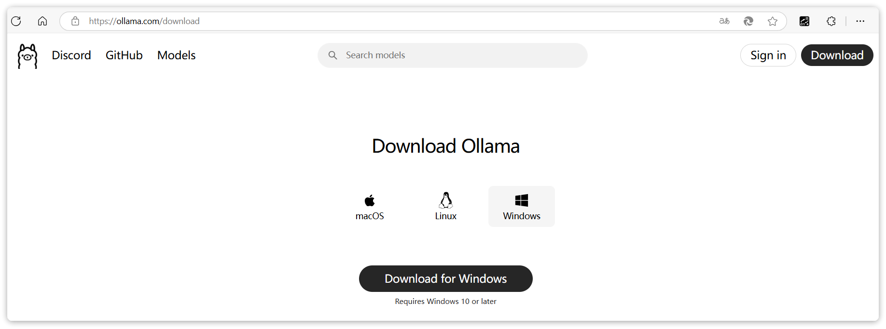
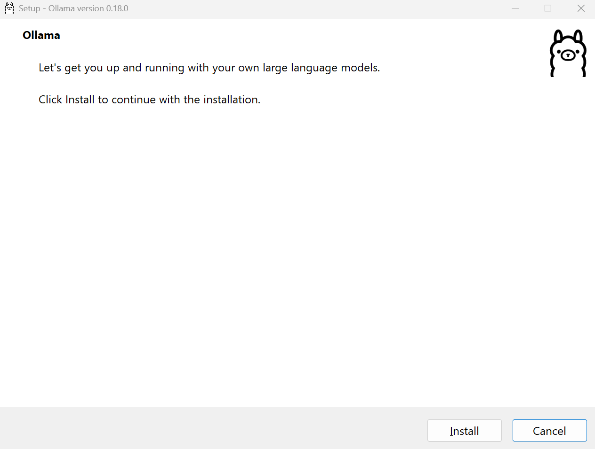
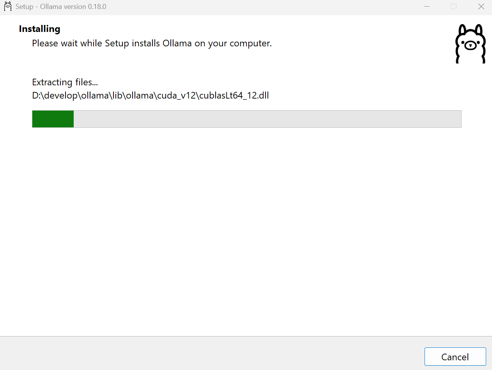
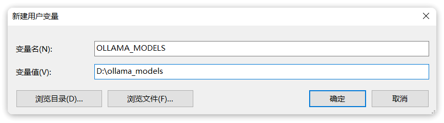
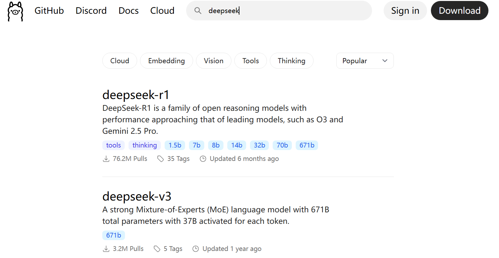
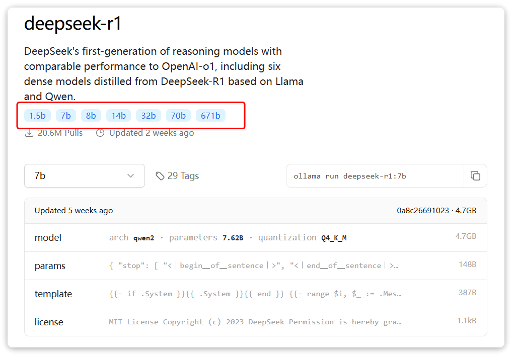
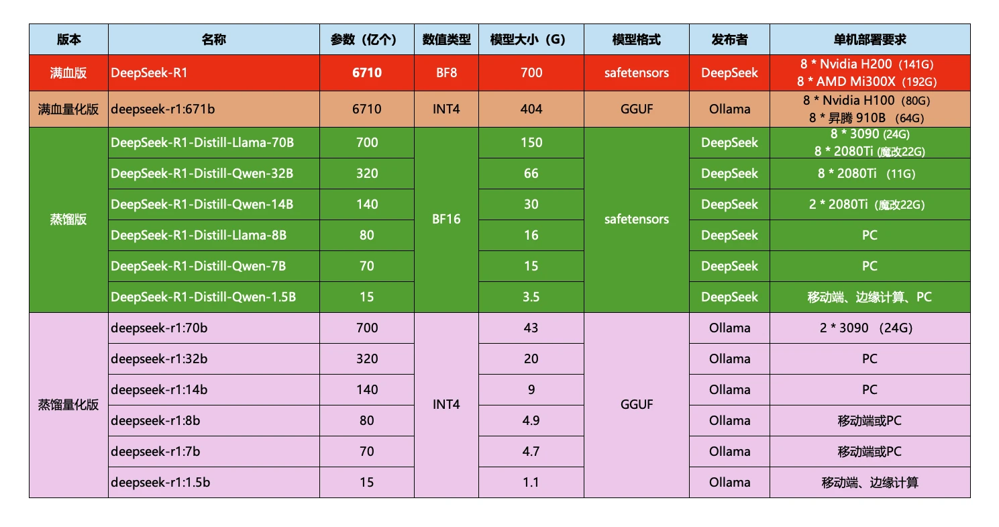
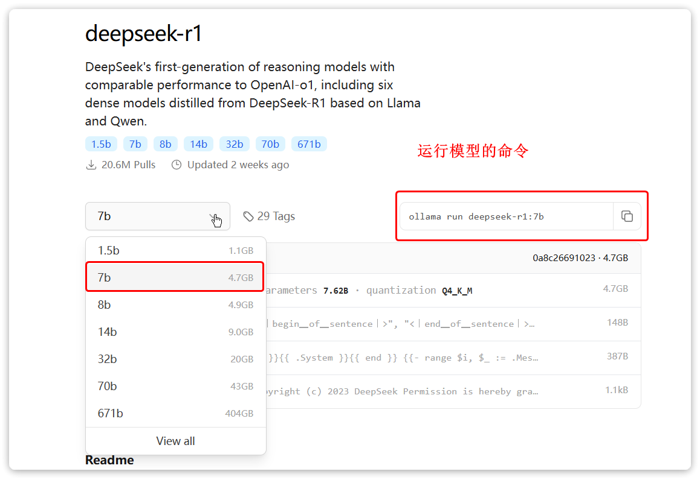
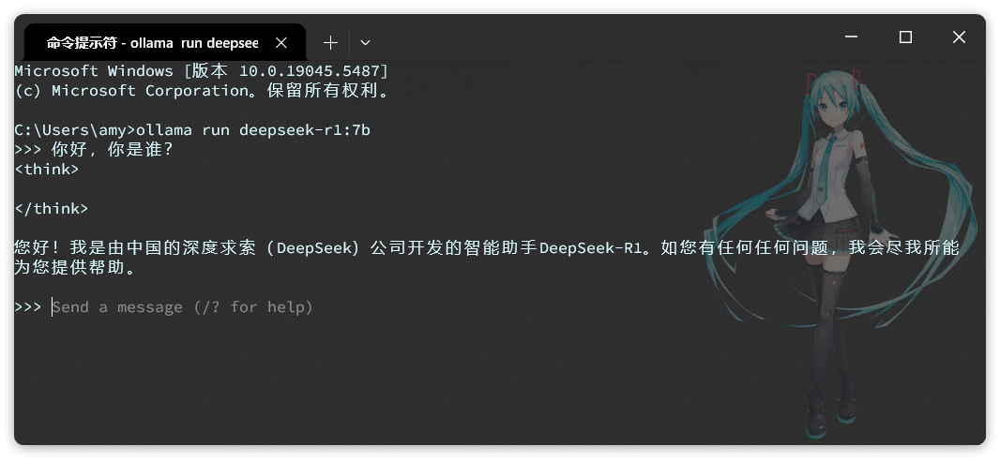
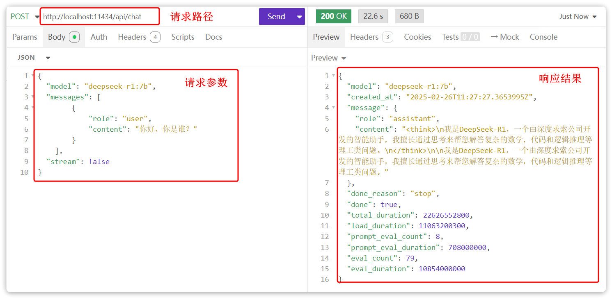

本地部署
很多云平台都提供了一键部署大模型的功能，这里不再赘述。我们重点讲讲如何手动部署大模型。
手动部署最简单的方式就是使用Ollama，这是一个帮助你部署和运行大模型的工具。官网如下：
下载安装ollama
首先，我们需要下载一个Ollama的客户端，在官网提供了各种不同版本的Ollama，大家可以根据自己的需要下载。

下载后双击就会弹出安装界面：

注意：
Ollama默认安装目录是C盘的用户目录，如果不希望安装在C盘的话（其实C盘如果足够大放C盘也没事），就不能直接双击安装了。需要通过命令行安装。
命令行安装方式如下：
在OllamaSetup.exe所在目录打开cmd命令行，然后命令如下：
OllamaSetup.exe /DIR=你要安装的目录位置
运行命令后，同样会弹出刚才的安装窗口，但是安装的位置已经是你设定的位置了。
点击Install即可安装，可以看到安装目录是自定义的D盘，而不是C盘：

OK，安装完成后，还需要配置一个环境变量，更改Ollama下载和部署模型的位置。环境变量如下：
OLLAMA_MODELS=你想要保存模型的目录
环境变量配置方式相信学过Java的都知道，这里不再赘述，配置完成如图：

搜索模型
ollama是一个模型管理工具和平台，它提供了很多国内外常见的模型，我们可以在其官网上搜索自己需要的模型：
如图，搜索deepseek，可以看到排在第一的是deepseek-r1：

点击进入deepseek-r1页面，会发现deepseek-r1也有很多版本：

这些就是模型的参数大小，越大推理能力就越强，需要的算力也越高。671b版本就是最强的满血版deepseek-r1了。需要注意的是，Ollama提供的DeepSeek是量化压缩版本，对比官网的蒸馏版会更小，对显卡要求更低。对比如下：

比如，我的电脑内存32G，显存是6G，我选择部署的是7b的模型，当然8b也是可以的，差别不大，都是可以流畅运行的。
运行模型
选择自己合适的模型后，ollama会给出运行模型的命令：

复制这个命令，然后打开一个cmd命令行，运行命令即可，然后你就可以跟本地模型聊天了：

注意：
-
首次运行命令需要下载模型，根据模型大小不同下载时长在5分钟\~1小时不等，请耐心等待下载完成。
-
ollama控制台是一个封装好的AI对话产品，与ChatGPT类似，具备会话记忆功能。
-
ollama也提供了供程序访问的HTTP接口，默认地址是http://127.0.0.1:11434/api/chat
Ollama是一个模型管理工具，有点像Docker，而且命令也很像，比如：
ollama serve # Start ollama
ollama create # Create a model from a Modelfile
ollama show # Show information for a model
ollama run # Run a model
ollama stop # Stop a running model
ollama pull # Pull a model from a registry
ollama push # Push a model to a registry
ollama list # List models
ollama ps # List running models
ollama cp # Copy a model
ollama rm # Remove a model
ollama help # Help about any command
测试API
Ollama在本地部署时，会自动提供模型对应的Http接口，访问地址是：http://localhost:11434/api/chat

大模型API
前面说过，大模型开发并不是在浏览器中跟AI聊天。而是通过访问模型对外暴露的API接口，实现与大模型的交互。
所以要学习大模型应用开发，就必须掌握模型的API接口规范。
目前大多数大模型都遵循OpenAI的接口规范，是基于Http协议的接口。因此请求路径、参数、返回值信息都是类似的，可能会有一些小的差别。具体需要查看大模型的官方API文档。